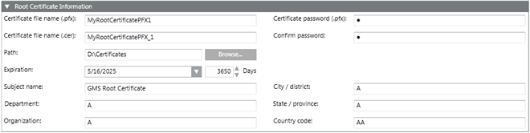

Create a Root Certificate (.pfx)
- In the SMC tree, select Certificate.
- Click Create Certificate
 and select Create ROOT Certificate (.pfx)
and select Create ROOT Certificate (.pfx)  .
. - The Root Certificate Information Expander (.pfx) displays.
- In the ROOT Certificate Information expander, enter the details as follows:
a. Enter the certificate file name (.pfx).
b. Enter the certificate file name (.cer).
c. Enter the certificate password (.pfx).
d. Click Confirm.
e. Browse for the location to store the root certificate on the disk. By default, the path of the last-created root certificate is selected.
f. Set the Expiration (validity period) duration in days. By default, the certificate expires after 3650 days.
g. Enter the information as required.
— Subject name: (default) GMS Root Certificate: Enter a unique subject name for identifying the root certificate after import in the Issued To field of the Windows Certificate store.
NOTE1: It is recommended not to set the subject name as the full computer name. This is because it is required to set the host certificate's subject name as the full computer name and the host and root certificate's subject name cannot be same; otherwise, the client or server communication does not work.
— Department
— Organization
— City/district
— State/province
— Country code (only two characters)
NOTE2: It is recommended to create a new certificate if the machine name is changed, each machine name must have a unique certificate, you can import and set the certificates as default. - Click Save
 .
.
- The data is validated, and on successful root certificate creation, two new root certificate files, one with a .pfx extension and the other with a .cer extension, are created at the specified location on the disk.
The root certificate (.pfx file) and its password are used for creating the host certificate from the root.
The root certificate (.cer file) is used for importing the root certificate in the Windows Certificate store when securing client/server communication.
